Zakary Thomas Crapo
Zak is a visual designer working at IBM in Austin, Texas. He graduated from the Maryland Institute College of Art with a BFA in Graphic Design.
In his free time he runs the IBM Make Lab, a bite-sized print studio stuffed between the whiteboards of Austin's design studio.
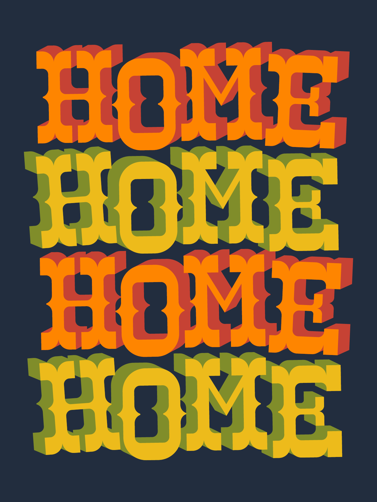
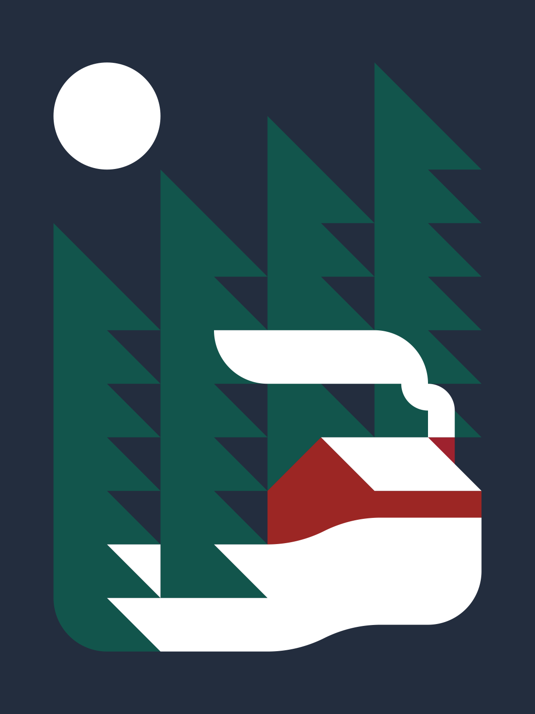
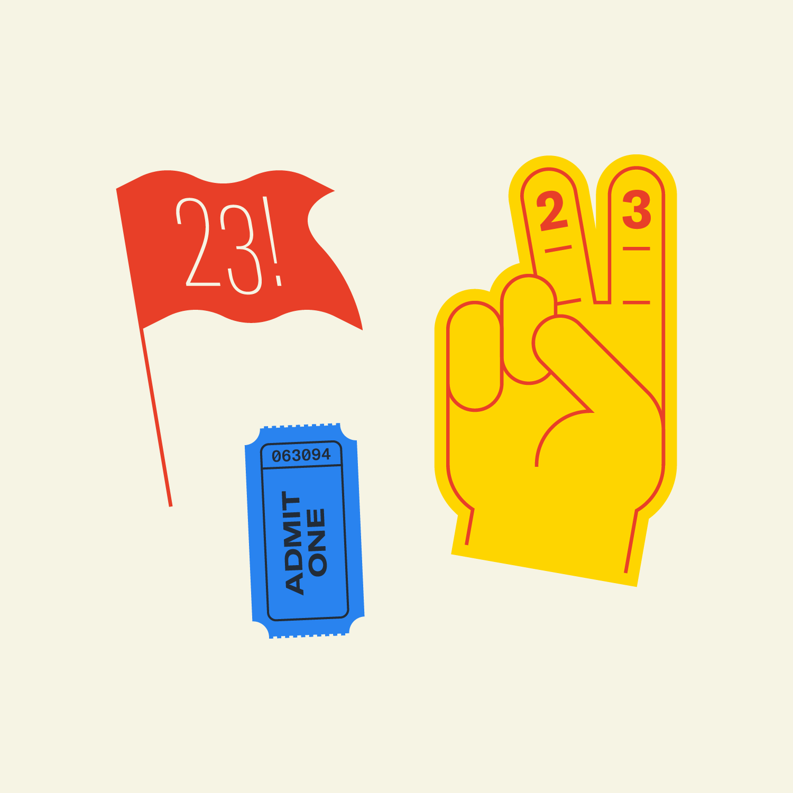
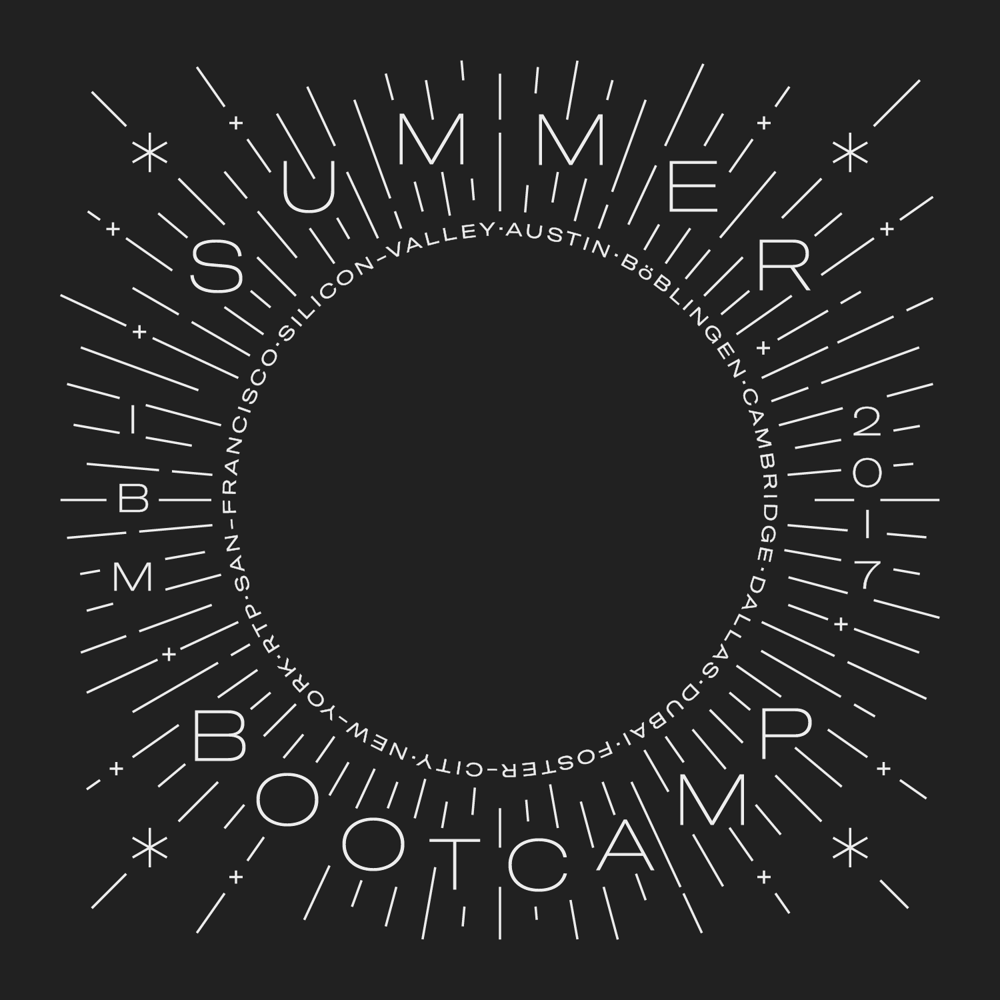
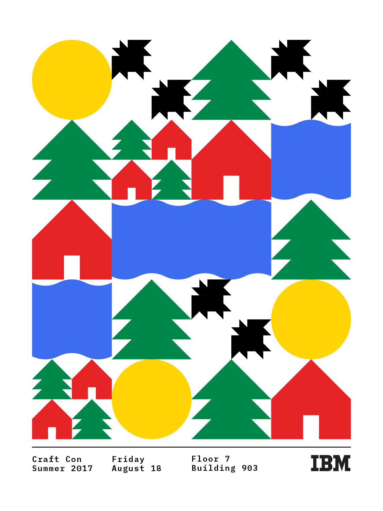
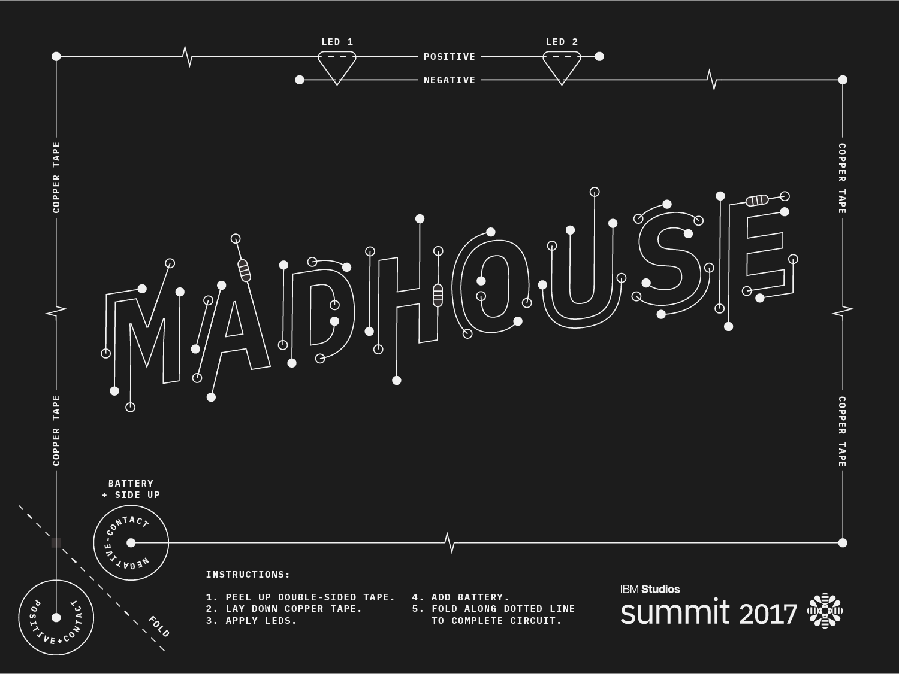
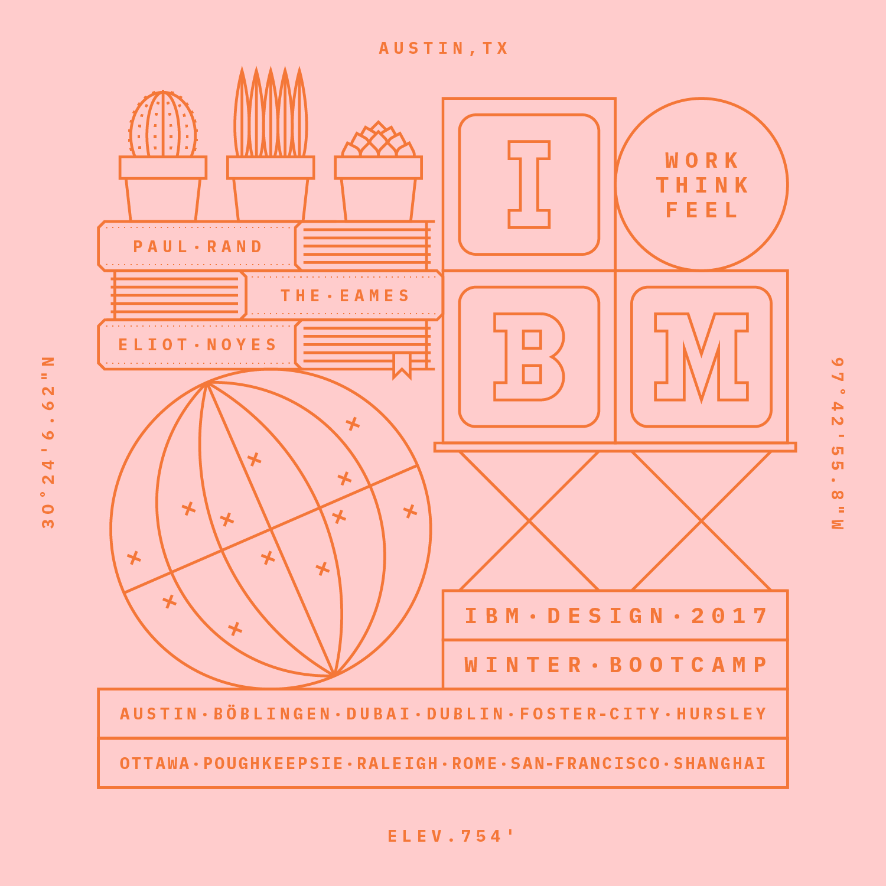
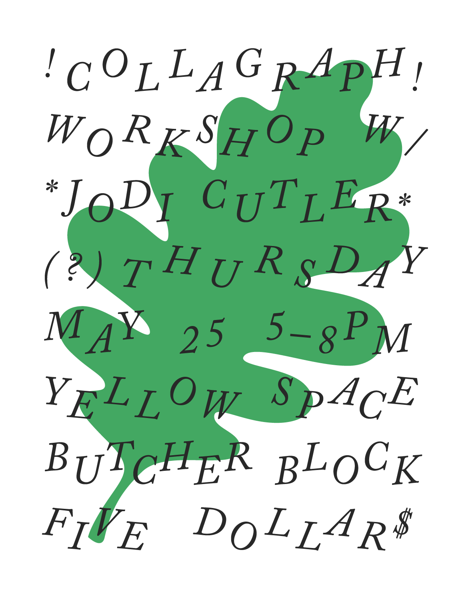
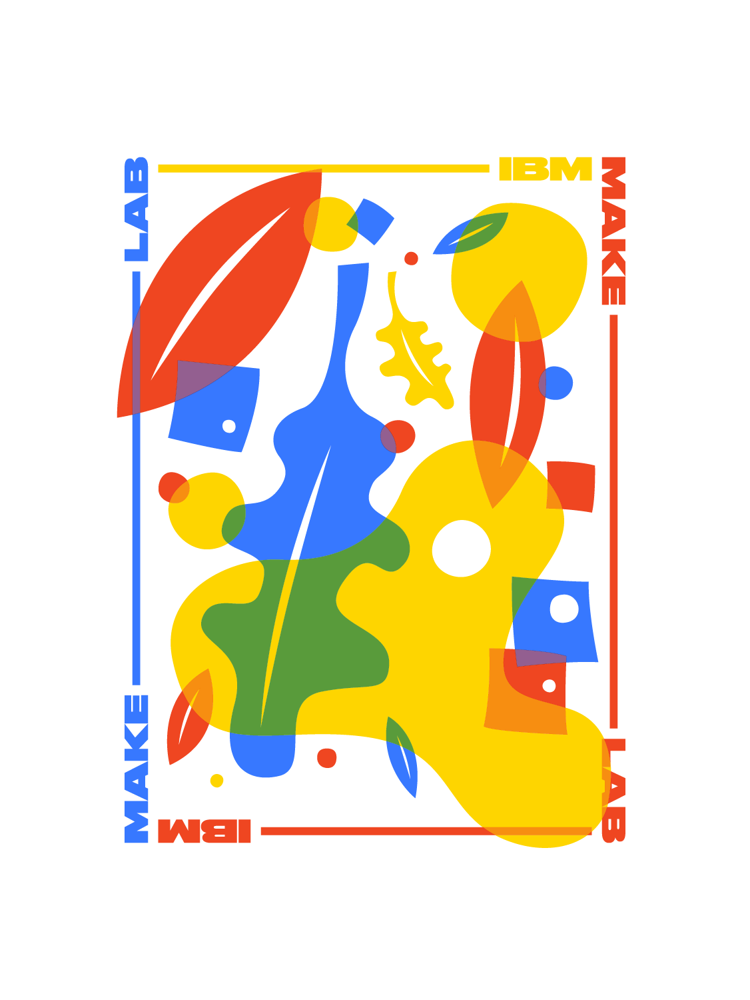
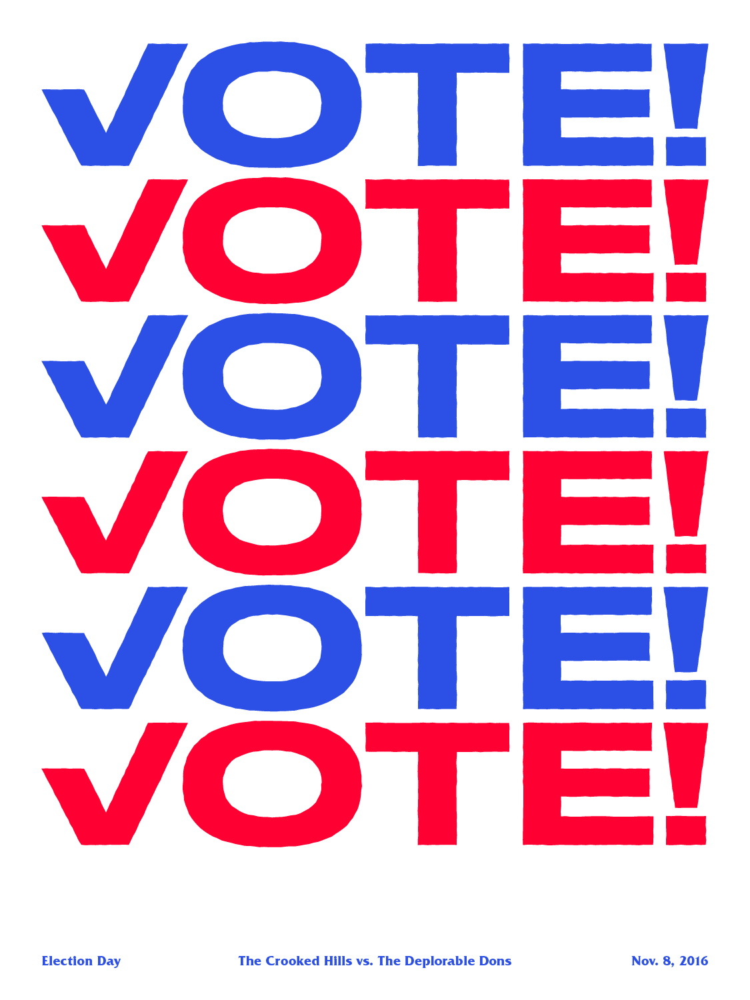
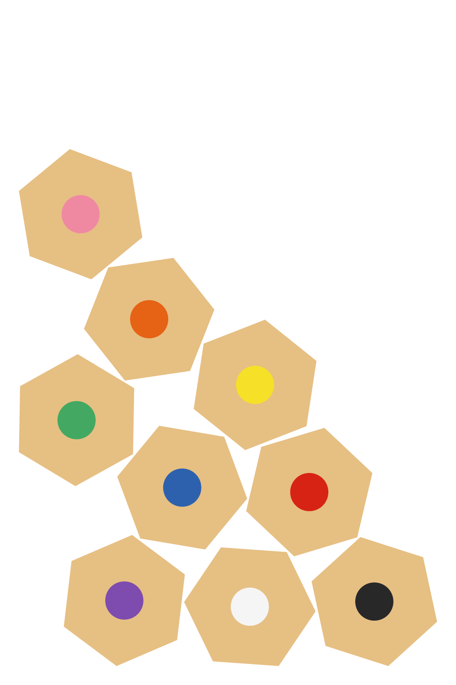